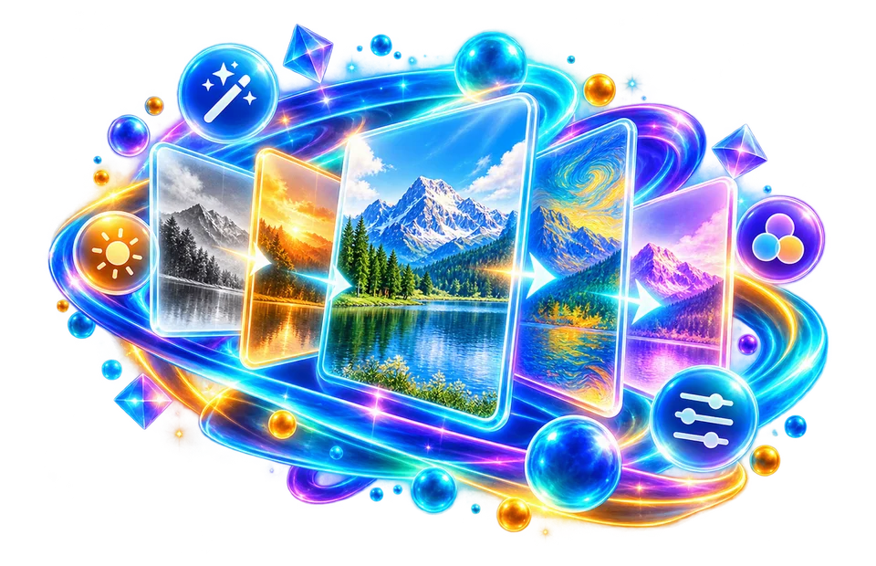

Select the photo to adjust
Increase photo contrast moderately, then inspect bright clouds and dark hair for clipping.
Live brightness, contrast, saturation, exposure, warmth, hue, blur and more.
Changes to brightness, saturation and contrast can make a photo look stronger while also destroying detail.

Increase photo contrast moderately, then inspect bright clouds and dark hair for clipping.
Correct exposure, contrast or warmth in a photograph.
Strong settings can clip highlights or shadows.
Increase photo contrast moderately, then inspect bright clouds and dark hair for clipping.
Strong contrast can wash out white fabric texture while crushing shadows in a dark suit. Compare the edited image to the original at matching zoom and focus on detail retention.
Use the real tool above to verify the result. The example illustrates the workflow, not a guaranteed outcome.
Strong contrast can wash out white fabric texture while crushing shadows in a dark suit. Compare the edited image to the original at matching zoom and focus on detail retention.
A pleasing screen preview does not guarantee the same result when printed. Keep a reversible original for subsequent edits.
Soften a background or conceal visual detail. Blur a distracting background area, then inspect whether the subject's boundaries stay recognizable.
Blurring is not a secure way to redact sensitive information.
Prepare a monochrome version of a picture. Convert a colour photograph to monochrome and inspect whether important shapes remain distinguishable.
Grayscale removes colour information from the export.

Changes to brightness, saturation and contrast can make a photo look stronger while also destroying detail.
Changes to brightness, saturation and contrast can make a photo look stronger while also destroying detail.
Increase photo contrast moderately, then inspect bright clouds and dark hair for clipping.
Strong contrast can wash out white fabric texture while crushing shadows in a dark suit. Compare the edited image to the original at matching zoom and focus on detail retention.
Image filters transform pixel values to achieve a visual effect such as increased contrast, changed saturation, grayscale, warmth or exposure-like brightening. Their names describe intended appearance rather than objective improvement. A warm filter may suit a sunset but make a product's real color inaccurate. Before applying a strong effect to a marketplace photo, compare the filtered image with the original to ensure customers will not be misled about fabric, paint or packaging colors.
Contrast adjustment spreads or compresses differences between light and dark tones. Raising contrast can make edges more distinct but may crush shadow detail or clip bright highlights. Brightness and exposure-like controls are not interchangeable in every image pipeline; increasing a pixel value uniformly can differ from an exposure-model adjustment. Saturation enhances or reduces color intensity but does not fix incorrect white balance automatically. Make changes gradually and inspect several regions instead of focusing on the subject's face alone.
A filter pipeline often renders pixels into a browser canvas before exporting. Repeatedly processing an already compressed JPEG can accumulate artifacts, particularly near text and sharp borders. Save a fresh copy from the original file for each experiment rather than stacking lossy generations unintentionally. For PNG images containing transparency, check whether filter operations preserved the alpha channel and did not produce dark outlines around semitransparent edges. Some image effects flatten the background or convert into an output format that cannot retain alpha.
A practical editing sequence might be: correct the crop first, apply a modest tonal adjustment second, and inspect detail before deciding whether sharpening is needed. A high-saturation preview on a bright phone screen can look excessive on another device. Compare the result on neutral backgrounds and at normal viewing size. If a face looks unnatural or a white object becomes tinted, reduce effect strength instead of assuming a filter is always an enhancement.
For an accessible instructional screenshot, text legibility and faithful UI colors may be more important than photographic drama. A grayscale filter can reduce color distractions but also erase differences encoded only by hue; verify that warning and success states remain understandable. For a social photograph, the desired aesthetic may be subjective, but file dimensions and format can still be checked objectively. Open the downloaded image and look at skin tones, gradients, shadows and sharp edges before publishing it as final.
For a product photo, first keep an untouched original and export one adjustment at a time. A modest brightness change can reveal a dark label, whereas excessive exposure may wash out white lettering so it cannot be recovered from the exported pixels. Increased saturation can also misrepresent merchandise colors; compare the result beside the original on a neutral display. If edges become soft after blur or aggressive filtering, reopening the output cannot restore detail that was discarded. When the source PNG has transparent areas, inspect the background after export: an operation that flattens transparency onto white can change how the product looks on a dark storefront.
Increasing saturation can make a blue sky look vivid while also causing a person's skin colour to appear unnatural. Brightness and contrast adjustments affect different parts of a tonal range, and pushing either too far can clip highlights or shadows. Compare your edited result against the original at the same zoom instead of trusting how it looks on a small preview. If you need a consistent batch of photographs, check examples under different lighting before applying one setting to every image. Filters cannot recover details that were never recorded, and repeated export through a lossy format can add unwanted artefacts.
Soften a background or conceal visual detail. Blur a distracting background area, then inspect whether the subject's boundaries stay recognizable.
Prepare a monochrome version of a picture. Convert a colour photograph to monochrome and inspect whether important shapes remain distinguishable.
Clipping maps multiple distinct pixel values to the same maximum brightness.
Colour filters can adjust tone or contrast but cannot reconstruct detail lost to strong motion blur.
Strong colour or contrast changes can hide faint ink and merge nearby character strokes.
Not from a rendered file with no retained information in those areas; the original capture may be needed.